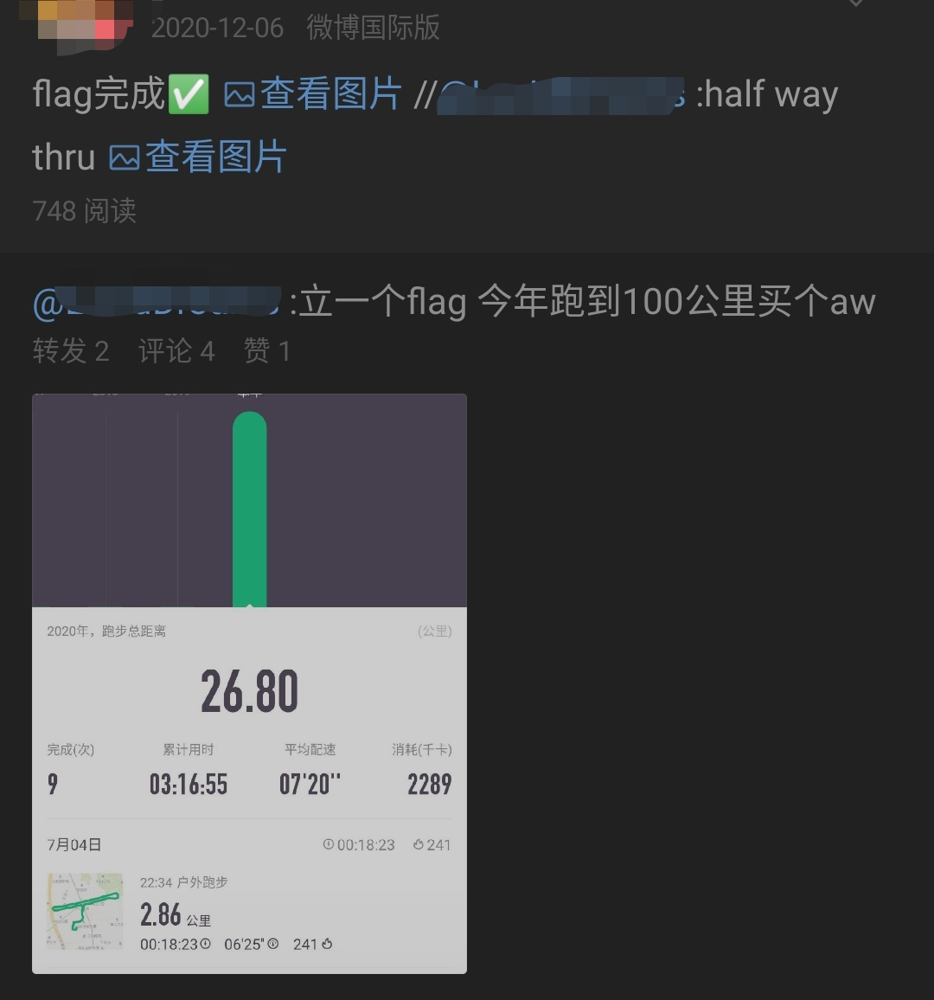

2020年度个人回顾
Create At: 2021-02-12去年做了一次19年的Review，看起来回顾了很多但是并没有什么实质上的东西。
几年在即刻上看到一位大佬的分享，关于个人复盘的框架，想试试看能不能套用上，做出结构化可衡量的Review来。
2019目标Review
目标1：上半年考到金融从业资格证
回顾
目标？
预计是在2020年上半年考到金融从业资格证。
发生了什么？
在看了两节视频课之后，在女朋友的建议下把目标换成了基金从业资格证。但是不但上半年没考到，上半年连书都没看完。下半年才真正开始学习，本来还计划十一国庆在家7天把视频看完，但是没看完。10月底终于看完了，但是开始做题目的时候才发现看了跟没看一样。紧急下载app开始刷题，发现超出计划时间了。本来已经报名，而且因为报名太晚还没报名到上海的考场，远在杭州，只得作罢。
结果？和目标对比处于什么状态？
在放弃那次考试之后就停止这项学习了。网上查了下2021年的报名时间，重新设置了个提醒事项在报名时间到了重新报名考试。 和原定的目标比，如果能够这次考到，那就算是延迟了一整年的时间达成。
理想的状态？
理想的状态是在考到证后，开始尝试CFA，或者是开始学习量化交易的知识。因为我希望能够学习投资的知识，产生被动收入。同时能够在和别人，甚至面试官说我对金融感兴趣的时候，能够有东西为我背书这个论点。 但是咨询了下朋友后发现CFA中会计内容还是挺多的，而我的弱点之一就是会计。所以可能有限考虑量化投资相关知识。
反思
亮点？客观原因？主观原因？
似乎找不出来有什么亮点。唯一的亮点可能是能够跟随视频课程完成了记笔记的学习。 客观原因是在不忙的时候下班回到家会有几个小时的空闲时间，而且逐渐失去了对游戏的兴趣。 主观原因是希望达成这个目标，所以有一定程度的主观能动性去驱使自己达成这个目标，而且达成的步骤之一是完成课程学习。
不足？客观原因？主观原因？
- 容易放弃。每天都能找到各种理由不去看视频和做题。今天觉得上班太累了，明天觉得没睡好没状态，就直接放弃了。客观上来讲确实很累，主观上来讲会放大这种疲惫成为理由。
- 轻信于明天的自己。在学习到难点时，总想着放到后面再看，但是实际上并没有后面了。或者觉得这章内容难，可以放弃这部分的分数。但是却发现放弃的越来越多，不会的也就越来越多，更没有机会凑到及格线分数了。更何况还忘记自己其实不是为了分数而考试，而是为了学习知识的。主观上来讲期时就是懒，客观上来讲确实需要花费整块的更多时间去做这件事。
- 没有计划。没有小规划和安排。只是定了类似于“上半年考到证书”、“这个月看完视频课程，下个月做题目”这种大的目标，而没有进一步拆解步骤。看似弹性的时间安排实际的效率更低，尤其是我知道自己没有自律性的情况下。
- 低估难度。看视频的时候觉得自己什么都会，快进看视频，做题发现什么都不会，只知其表，不知其里，忽略了很多细节和思考。
目标2：精学js
回顾
目标？
精学JS，以后开发的时候更加游刃有余。
发生了什么？
只能说在一定程度上有了一些进步，只是通过做自己的项目做了些练习，但是实质上并没有更加系统化的学习。
结果？和目标对比处于什么状态？
无法量化。
理想的状态？
无法量化。
反思
亮点？客观原因？主观原因？
上半年的时候确实是把javascript.info通读了一遍，学习到了一些技巧。
不足？客观原因？主观原因？
但是后续没有太多时间和条件（实际场景）去学习更深层次的内容。
目标3：学个语言
没啥好说的，甚至都没开始。
目标4：工作上往PM转
回顾
目标？
工作上往PM转。
发生了什么？
- 在集团架构调整前，老板确实给了很多PM的活，可以说是50-50了，而且感觉自己干的还行；
- 架构调整后换了老板，不再接手这方面的活。但是年底找到了机会，去别的Team直接做PM。
结果？和目标对比处于什么状态？
换Team之后，确实是开始做PM了，但是因为是接手别人的活，所以需要花很长时间学习。而且这个team是给一个客户做深度定制的项目，从发展上来讲可能没有做通用产品好，但是这是起了个好头。
理想的状态？
其实我是希望去做通用产品的PM的，因为涉及面更广，之后的经验更有可复制性。但是没想到集团架构调整。也许不调整的话，今年是有机会的。
反思
亮点？客观原因？主观原因？
确实向当时的老板证明了自己有转岗所需的能力。老板也很nice，愿意给我机会。
不足？客观原因？主观原因？
时间是有限的，同时担任两方面的工作，时间不可能完美的分配。
目标外完成的
回顾
目标？
去年年中的一个2020年要跑完100公里的flag倒是完成了。
发生了什么？
其实每年天气暖和一点都会夜跑，一般是每周末沿马路夜跑一次。主要是三个原因：
- 锻炼身体。因为每天都坐着也没啥运动，对身体不太好。而且跑步的时候明显感觉到自己心肺能力不好，需要锻炼下，which is working.
- 其实还是挺喜欢跑步的时候感觉的，可以想一些事情，还有出的大汗淋漓的感觉。
- 想买Apple Watch。但是从朋友那借了个AW用了一段时间之后发现没啥实际意义，所以后来虽然达成了flag但也还是算了。
结果？和目标对比处于什么状态？
达成了理想状态。其实预计是更早达成的，但是后来最后10公里的时候，天气开始逐渐变冷，跑步呼吸冷空气会非常难受，而且很容易感冒，所以只能见缝插针的分3次跑完了。 在跑步的那段时间确实能感觉到体能有一定程度的上升。但是那段时间也同时是在上增肌私教课的，所以也不太清楚是哪个的效果。
理想的状态？
其实我是希望能通过跑步和健身让我体力在白天的续航时间更长一点，which is working，因为在停止锻炼一段时间后下班经常会出现有种低血糖的感觉。
反思
亮点？客观原因？主观原因？
亮点是后续能够将跑步的配速提升上来，并且几乎坚持每周都跑一次，即使跑的很短。 客观上来看确实是有时间，而且条件都合适。主观上来看，还是想买AW...
不足？客观原因？主观原因？
完成之后很长一段时间就没去锻炼了。 客观上确实是天气冷了，跑步不太合适了，而且膝盖在做深蹲时会开始疼了。主观上还是因为懒。
探究 & 提升
探究
通过以上的实践，总结了以下经验：
- 量化目标。过于笼统的目标实际上根本无法执行。例如学习JS和一门语言。
- 拆解目标和计划。在看了Stephen Duneier的TED TALK之后，我觉得我需要像他一样，将大的任务拆解为小的可管理的任务，然后每次完成一点点，形成进步：
- 记录进度。使用这套复盘模式对进度进行记录，并定期review进度。记录的内容甚至可以记录像上面提到的觉得难的需要放到后面去看的课程内容。像管理项目一样管理自己。
目前的目标是一个个非常大的目标，拆解的粒度还不够细，结果每一个拆解目标都完成不了，最后放弃掉了。
提升
感觉是一个新立flag的板块。
- 开始做：遵循探究的经验，对现有目标重新梳理，同时对新的目标做出规划；
- 继续做：也许使用物品奖励是一个不错的方法？
- 停止做：无谓的、不切实际的目标定制，无方法论、无架构的空想。
18岁的我看到今天我，会失望吗
会。
那天女朋友问到我这个问题的时候，我几乎是毫不犹豫的回答出来。
18岁的我心气正高，觉得自己无所不能，觉得自己未来一定能做出一番事业，尤其是在自己感兴趣的领域，如果不是数码，就是互联网。
从小的时候就看到一本书，书名虽然不记得了，但是依稀记得内容是关于各位计算机行业的大佬，比如孙正义，求伯君等人的发家历程，那时候总幻想自己也能成为其中之一。直到18岁，甚至直到22岁，这种幻想都没有被现实摧残。
但是现在的工作，状态，思想，和人的关系，没有一个是和自己的期望搭嘎的。生活中没有任何一个让我提得起兴趣的事情起来，哪怕是在10年前，一个idea也会让我兴奋很久，但是现在先不说没有以前那种天马行空的想象力了，即使偶尔蹦出一个，也会找出N多个不可行的原因出来。
现在能让我感受片刻的快乐的可能就是学习之后获得知识的时候，或者买到一个想买的东西的时候。
感觉自己步入30岁的过程中，就像是从安卓变成iOS的过程：从一切皆有可能到稳定秩序的建立。
我不想真的到30岁的时候，还是和现在一样。
flags
- 完成基金从业考试（5 weeks） 期望目标：通过基金从业考试。
- 2/18报名；
- 2/28前完成课程复习（一天2章）；
- 3/14前完成章节题库（一天1章）；
- 3/21前完成模拟卷练习；
- buffer；
- 3/27考试。
- 完成B站上的俄语课程（19 weeks） 期望目标：能够阅读俄语句子，了解基本语法。
- 6/27完成课程。每周一课，现在已经上完2课了，还有19课。
- 每周去至少去两次健身房。 期望目标：体脂下降5%，肌肉增加5%。